Gemüse-Bibimbap
12,00 €Reis, frisches Gemüse und Sesam.
VeganKOREANISCHES RESTAURANT · BOCHUM
Frisches Gemüse, würzige Klassiker und viele vegane Gerichte. Entdecken Sie Papa Seoul an der Wittener Straße – ehemals Tofuhaus.
Wittener Str. 236 · 44803 Bochum
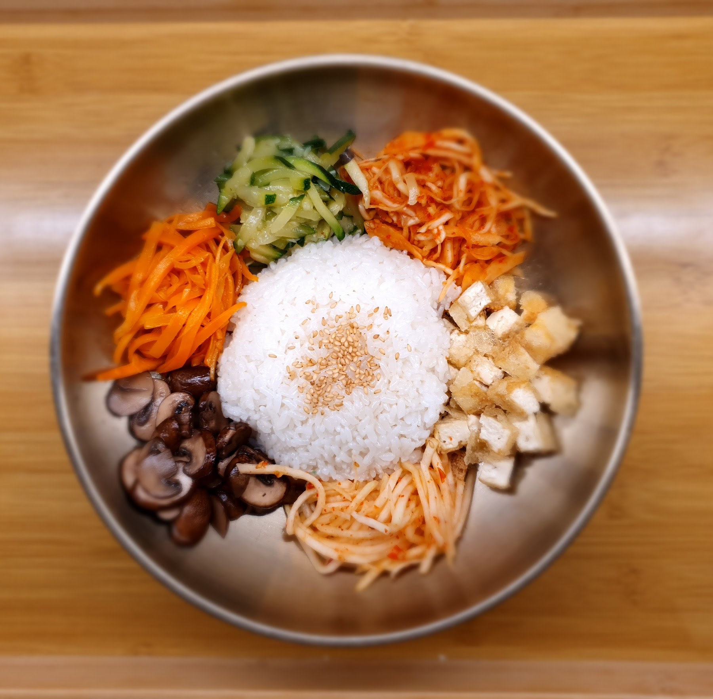
Reis, frisches Gemüse und Sesam.
Vegan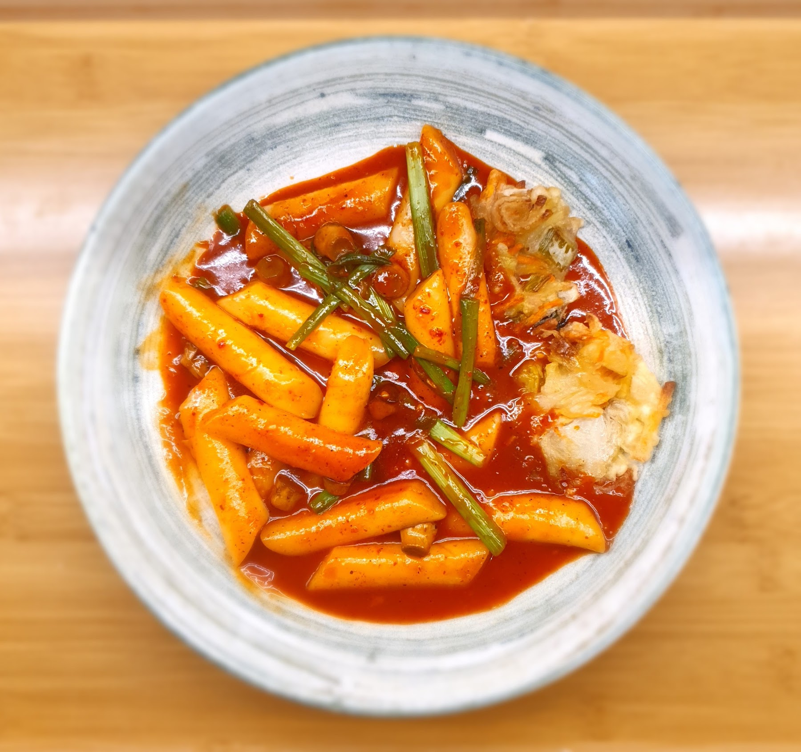
Koreanische Reiskuchen in pikanter Sauce.
Vegan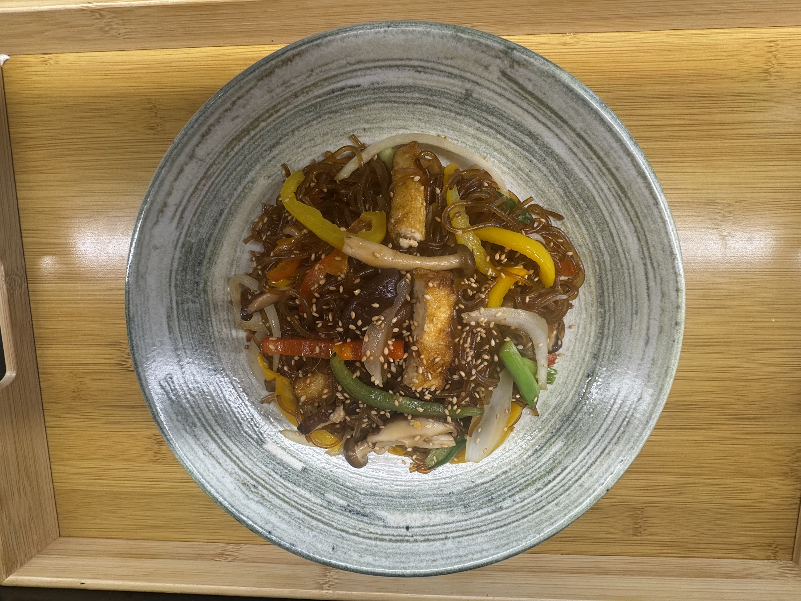
Außen knusprig, innen zart.
Vegan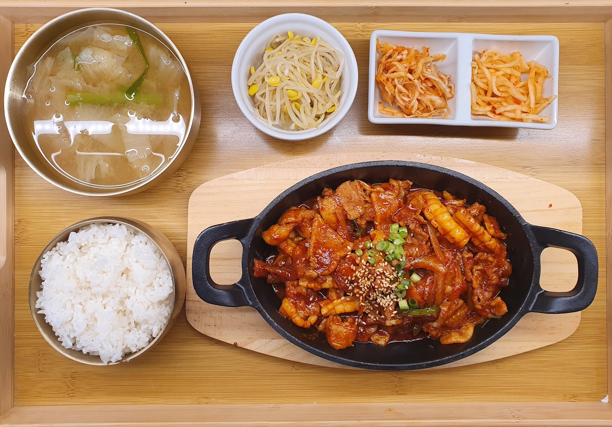
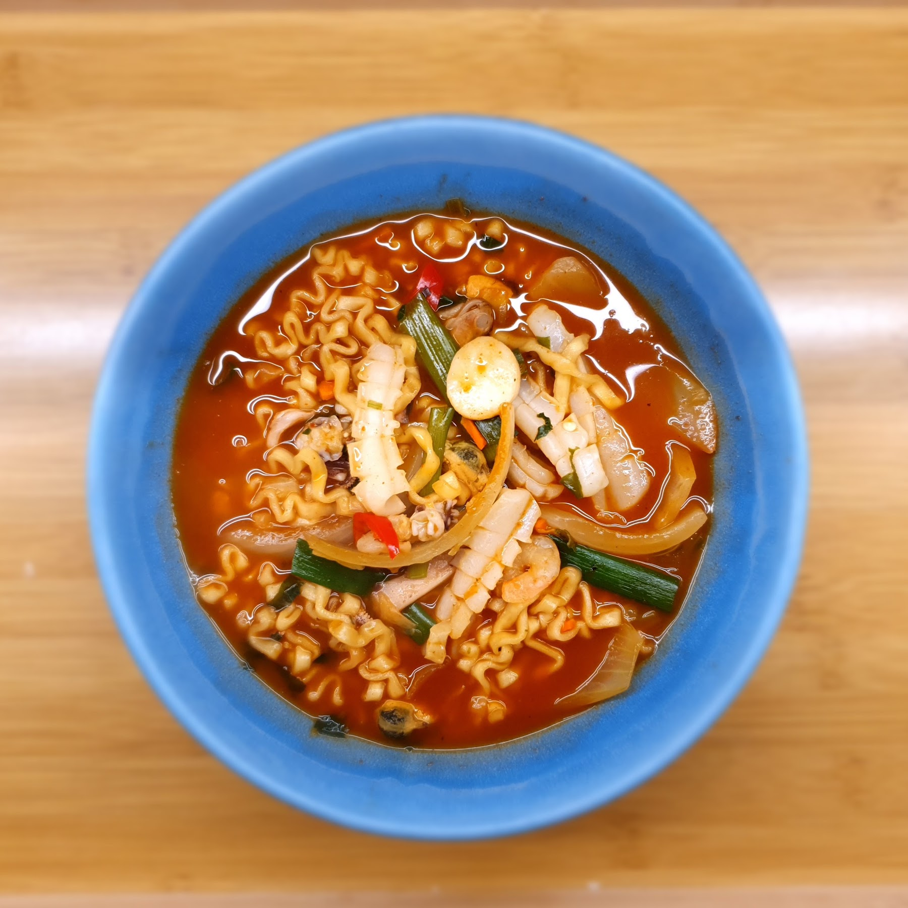
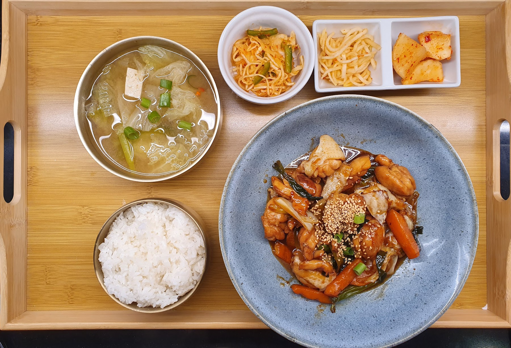
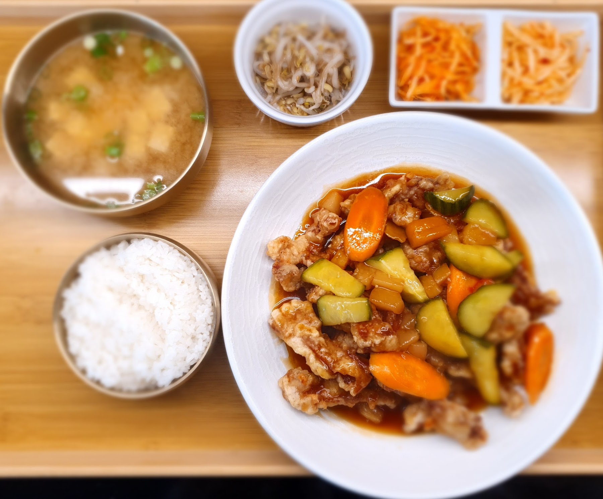
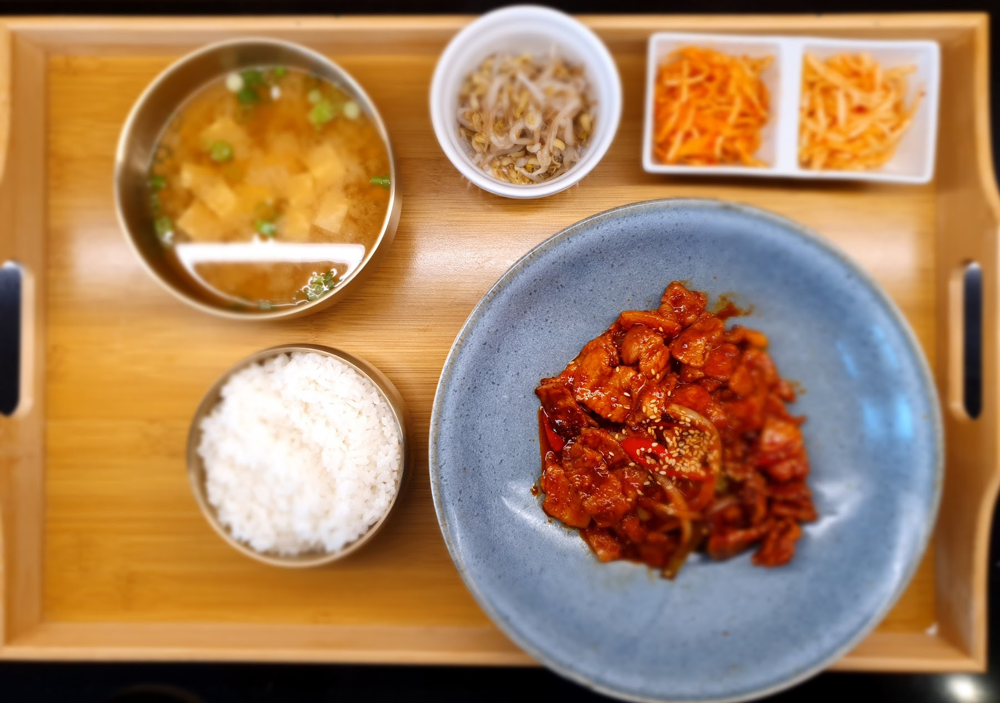
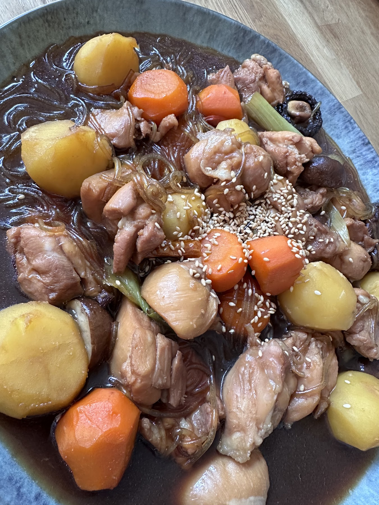
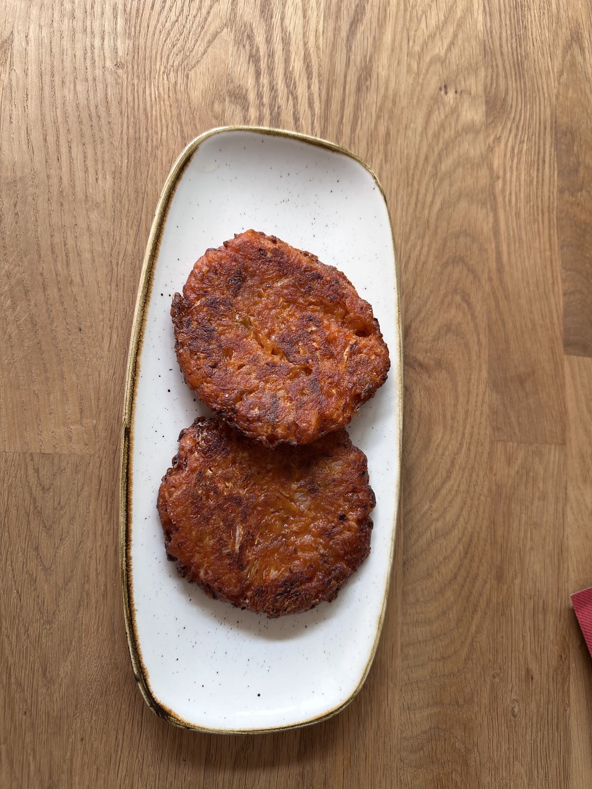
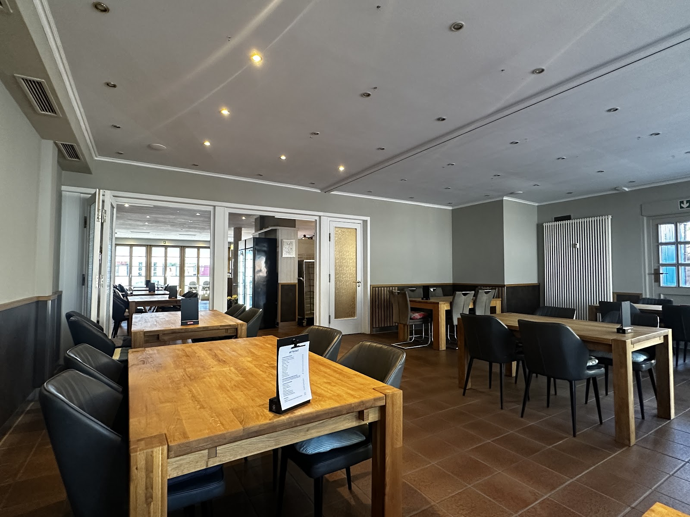
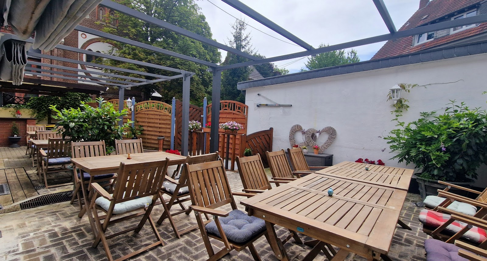
Speisenfotos überwiegend vom Restaurant auf Google Maps; ergänzende Fotos aus Gästebewertungen. Zum Vergrößern auf ein Foto klicken.
Gemütliche, saubere Atmosphäre, freundlicher Service und vegetarische sowie vegane Auswahl.
minju simGoogle · sinngemäß zusammengefasstBeschreibt Bibimbap, gebratene Aubergine und geschmortes Hähnchen als besonders gelungen.
SamGoogle · sinngemäß zusammengefasstBesonders begeistert von den Tteokbokki.
HelenaGoogle · sinngemäß zusammengefasstAusgewählte aktuelle Papa-Seoul-Bewertungen, sinngemäß zusammengefasst. Die Google-Gesamtwertung umfasst alle Bewertungen dieses Standorts.
Sie möchten bei uns essen? Reservieren Sie Ihren Tisch bequem online. Wir freuen uns auf Ihren Besuch.
Tisch online reservieren ↗